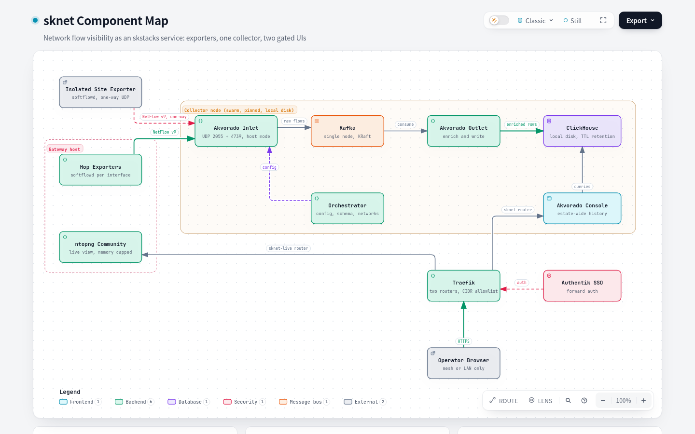
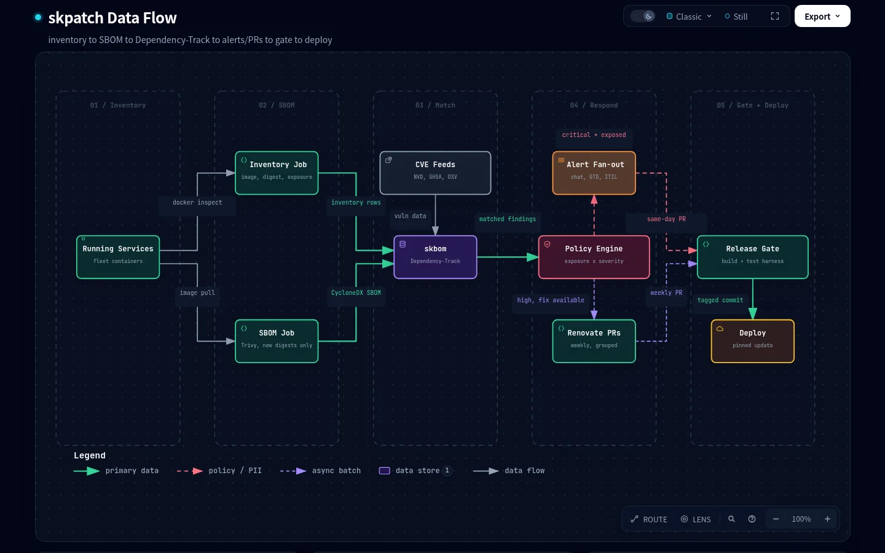
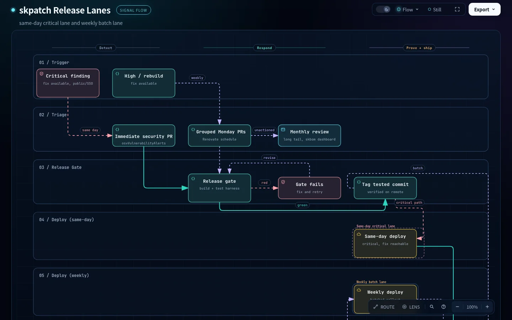

sknet is an skstacks role that turns flow records from every network hop into one searchable history and one live view. Akvorado keeps the estate-wide record, ntopng Community shows what is happening right now, and small softflowd exporters on each gateway feed both. Web access is gated by SSO and a mesh or LAN allowlist, and isolated sites get exactly one one-way telemetry exception.
Once a network is split into a trusted core, a mesh and a few one-way sites, "who is talking to whom, and how much" stops being obvious. sknet answers it without a SPAN port, a commercial probe or a new appliance: it deploys like every other skstacks service, documents itself, and keeps the upstream applications exactly as their authors built them.
Akvorado stores flows from every hop in ClickHouse, with retention sized to a fixed disk budget, so last week's traffic is still a query away.
ntopng Community runs on the gateway host with a hard memory cap, for the "what is happening right now" question Akvorado is not built for.
softflowd runs one instance per interface on the hosts you choose, with pinned interface indexes so graphs stay stable across reboots.
Both web UIs sit behind SSO and a CIDR allowlist, and the collector ports accept flows only from the exporter addresses you list.
The whole collector stack defaults to a budget of about 3.5 GB of RAM and a 20 GB disk cap, on one pinned node with local disk.
No forks, no custom images, no re-skinning. Pinned upstream tags, upstream logos, credited below.
A flow that crosses several networks is visible at every hop it touches. sknet's pattern is to put one exporter on each hop that matters and one collector where the data can live on local disk, then name the networks so the console reads like a map instead of a list of addresses.
| Example hop | What to export |
|---|---|
| Gateway, LAN side | The LAN interface, so internal traffic and what leaves the LAN is recorded (for example 192.0.2.0/24). |
| Gateway, mesh and links | The mesh interface and each site-to-site link interface, classified so the console can tell mesh from internet. |
| Cloud VPC site | One exporter at the site's edge. It is one-way: it can send telemetry to the collector and nothing else. |
Flow metadata reveals who talks to whom, so sknet treats it as sensitive from the first packet. Nothing is exposed publicly, and the web UIs are reachable only from the networks you name.
Two Traefik routers, one for the console and one for the live view, both require your identity provider (Authentik) before a page loads.
A per-router allowlist middleware limits who can even reach the login. It defaults to private ranges and is set to your mesh and LAN in an instance.
Split DNS points the UI names at an internal address, so off-mesh resolvers either fail to resolve or hit the allowlist and get a 403.
The framework ships with documentation addresses only (192.0.2.0/24, 198.51.100.0/24). Real addresses and names live in your private instance repository.

| Component | Role |
|---|---|
| softflowd | Per-interface NetFlow v9 exporter from distro packages, installed by an idempotent play that also supports removal. |
| Akvorado | Inlet, outlet, orchestrator and console: the flow collector and the estate-wide web console. |
| Kafka and ClickHouse | Single-node Kafka (KRaft) as a buffer and ClickHouse as the store, both on local disk of the pinned data node. |
| ntopng Community | Live view as a pinned container on the gateway host, memory capped, bound to the LAN address behind Traefik. |
| Traefik and SSO | One router per UI, each with the SSO middleware and a per-service CIDR allowlist. |
| Port allowlist | Firewall rules on the data node that accept flow packets only from listed exporter addresses. |
Each diagram is a standalone, self-contained HTML page: explorable, with motion, and a dark/light toggle. They open in a new tab.


A plain Markdown version of the component map, which renders directly on GitHub, lives in the repository README.
sknet is an optional role in skstacks, deployed with the same swarm and host plays as its siblings: set the data node, the exporter list and the allowlist in your private vault, deploy the stack, run the exporter play on the hosts you chose, then the live play on the gateway. The documentation below covers the overview, the architecture, the multi-hop pattern and day-two operations.
sknet gives the rest of the fleet a window onto its own traffic. SKStacks is the framework it deploys through, sksec guards the edge its UIs sit behind, and skpatch keeps its pinned images current. All part of SKWorld, the sovereign AI ecosystem where you own the whole stack, from silicon to soul.